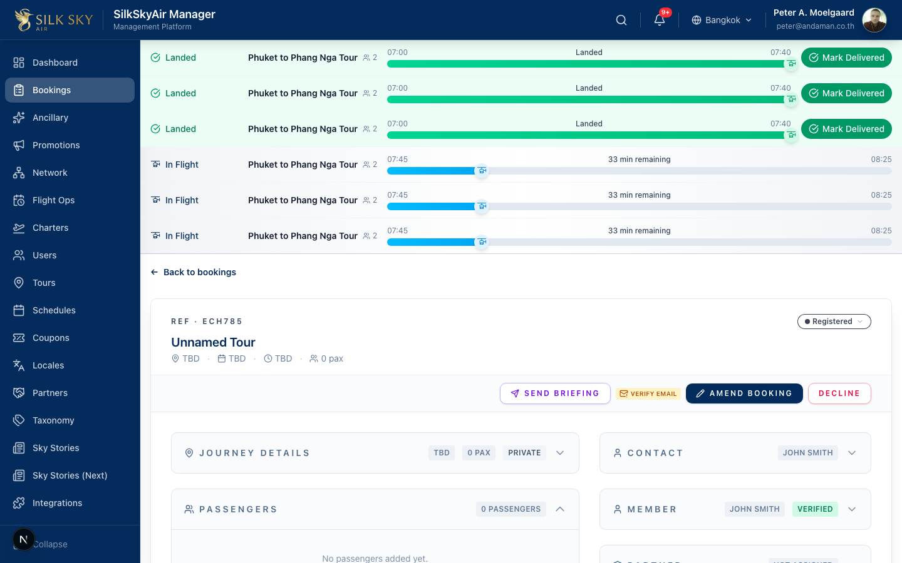
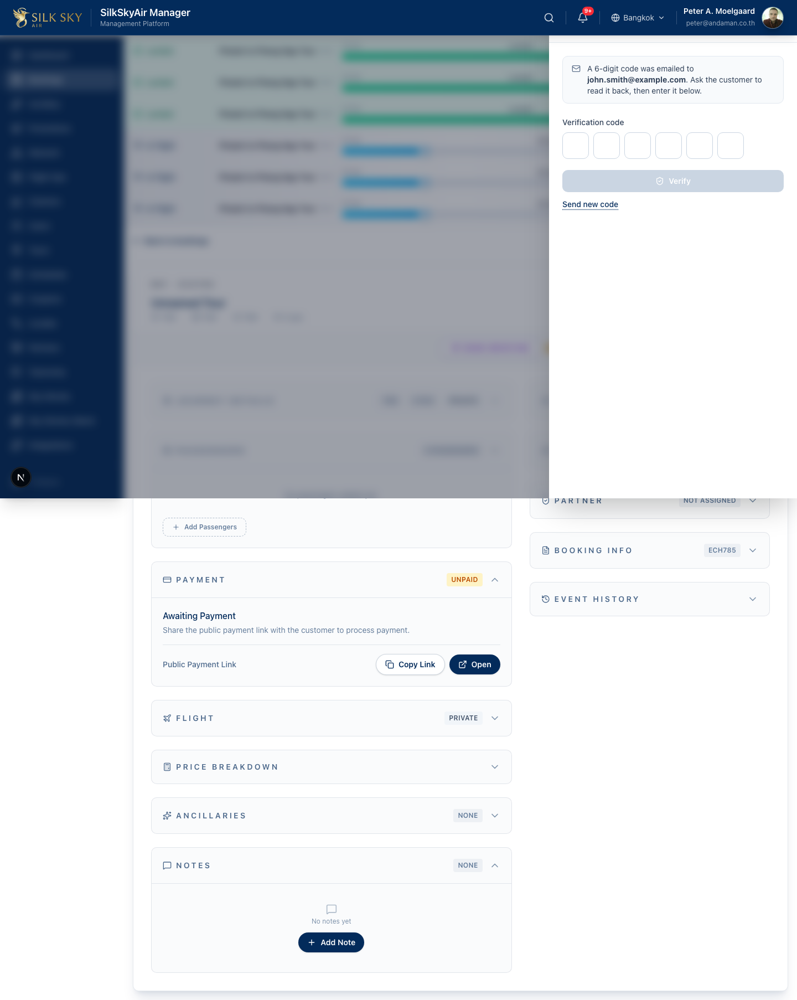
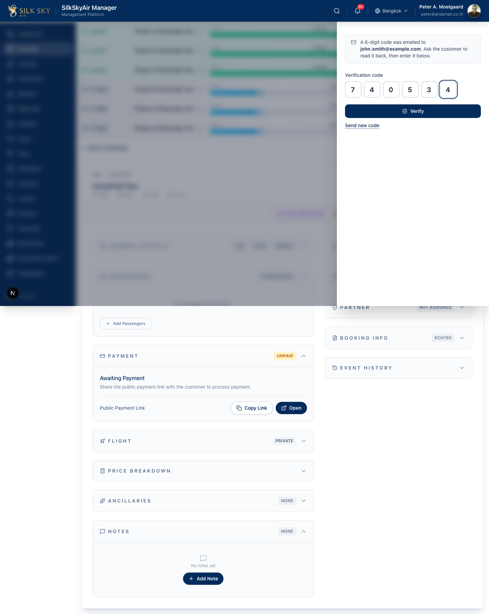
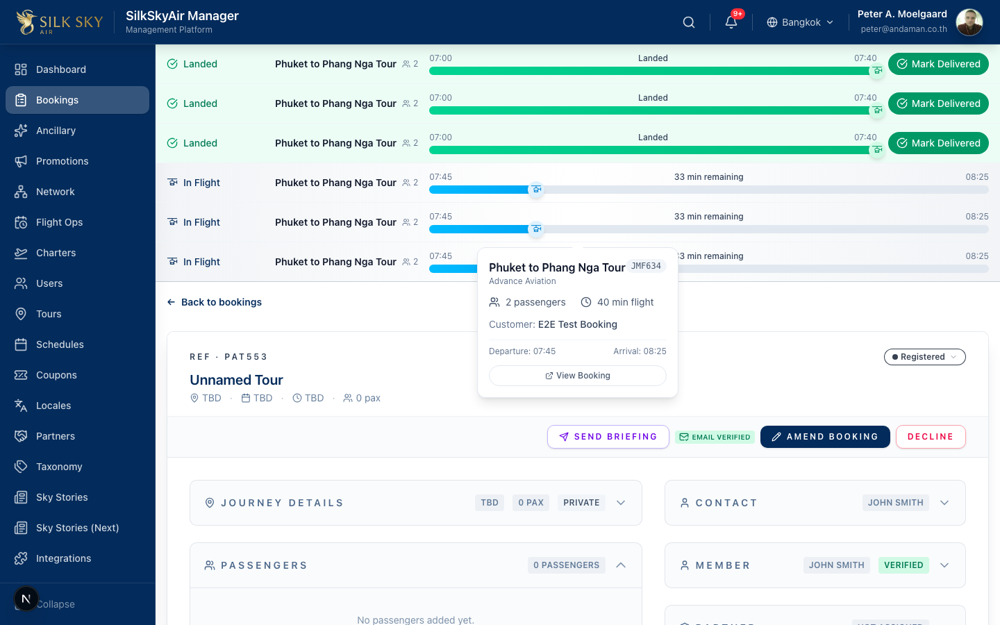

Booking Email Verification (Back-office)
App: BackOffice (Manager) Who uses it: Ops staff with the
module:bookings:accessprivilege (booking managers and organization managers). What it does: Lets the back-office confirm that the lead passenger's email on a booking is genuinely theirs. A 6-digit code is emailed to the lead-pax address; staff enter it on the booking to flip its verification badge from amber (unverified) to green (verified). This is separate from the member account email badge — a booking can have a different lead-pax email than the member's portal-login email, and both are tracked independently.
Before you start
- Local URL:
http://localhost:3000/bookings(staging / production: the same path on the relevant Manager host). - Account: Sign in with a Manager account that has the bookings module enabled (e.g.
peter@andaman.co.thon local). Bothbooking_managerandorganization_managerhold the required privilege. - Prerequisites: a booking with a lead-pax (contact) email. To verify successfully you need the 6-digit code that was emailed to that address — on local, read it from the n8n execution or the booking-verification email the workflow sends.
- Two different badges: the member account badge tracks
member_accounts.email_verified_at(portal-login email). The booking badge described here tracksbooking_verifications.verified_at(this booking's lead-pax email). They sit next to each other and are independent.
Step-by-step
Step 1 — Spot the unverified badge
On the Bookings list, each card shows the booking verification badge. An unverified booking shows an amber mail-warning badge.

What you should see: an amber badge next to the member-account badge on the booking card. In full (non-compact) mode it reads Verify Email; on cards it's the compact amber mail icon. Hovering shows "Booking email not verified — click to enter the 6-digit code".
Step 2 — Open the verification drawer
Click the amber badge. From the list, this navigates to the booking detail with ?verify=open, which auto-opens the drawer. On the detail page, the inline badge opens the drawer in place (no URL change).

What you should see: a right-anchored drawer titled Verify
Step 3 — Enter the 6-digit code
Type the code. The cells auto-advance as you type; Backspace in an empty cell jumps back; you can paste the whole code and it fans across the cells.

What you should see: all six cells filled and the Verify button now enabled. Pressing Enter also submits. If the code is wrong or expired, the cells clear, focus returns to the first cell, and an inline red error appears ("Incorrect or expired code. Try again.").
Step 4 — Verified
Click Verify. On success the drawer closes, a success toast appears ("Booking email verified"), and the badge flips to green.

What you should see: a green mail-check badge (in full mode it reads Email Verified). The green badge is not clickable — verification is one-way, so there's no reason to reopen the drawer.
Tips & common questions
- The customer didn't get the code / it expired. Open the drawer and click Send new code. A fresh code is emailed and an info toast confirms it was sent.
- What's the difference between the two mail badges? The member-account badge is about the customer's portal-login email; this booking badge is about this booking's lead-pax email. A returning member can book with a different contact email, so both are surfaced separately.
- The badge spins forever / disappears. Loading shows a small spinner; a genuine fetch error renders nothing (the badge hides itself rather than showing a broken state). Reload the page to retry. Statuses are cached for 60 seconds to avoid hammering the API when a list renders many cards.
- Why doesn't the code autofill from my email like other OTPs? The input deliberately omits
autoComplete="one-time-code"— Chrome's OTP autofill was clearing adjacent cells on repeating digits (e.g.000000). The manager reads the code from the customer verbally, so browser autofill isn't needed here. - I pressed back after
?verify=openand the drawer reopened. It shouldn't — theverify=openparam is stripped from the URL once consumed, so a reload won't re-trigger the drawer.
Reference
- Code: silkskyair-manager/app/(workspace)/bookings/_components/booking-verification-badge.tsx (badge + 60s cache) · verification-drawer.tsx (6-cell OTP entry) · mounted in
booking-card.tsx(list) andbooking-detail-view.tsx(inline +?verify=open/ window-event open). - API:
silkskyair-manager/app/api/bookings/[bookingId]/verification/route.ts— GET returns{ verified_at, expires_at }; POST{ otp }proxies the apiverifyedge function (action='verify_otp'); POST{ action: 'send_otp' }fires the booking-verification-email workflow. All methods gated tomodule:bookings:access. - Pairs with: silkskyair-api commit
3b0a3e8(OTP email template) · silkskyair-workflows commit81e51d4(booking-verification-email workflow). - E2E:
silkskyair-manager/e2e/manager-booking-verification.spec.ts. - Shipped: W23 — manager commit
c5f75d5(F1.16 / R21).